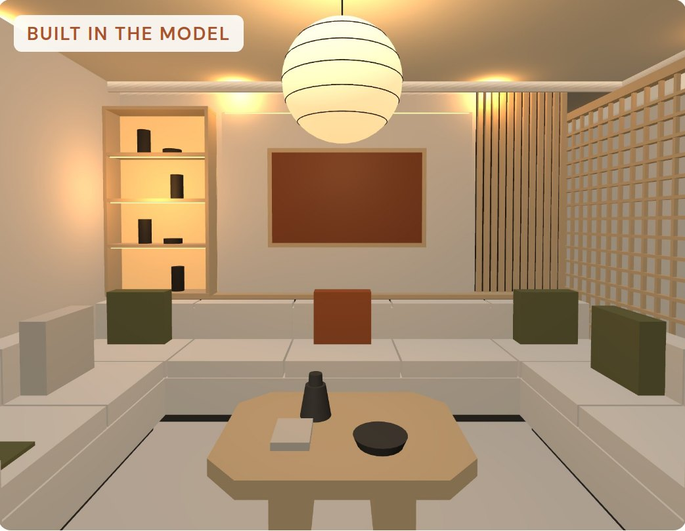
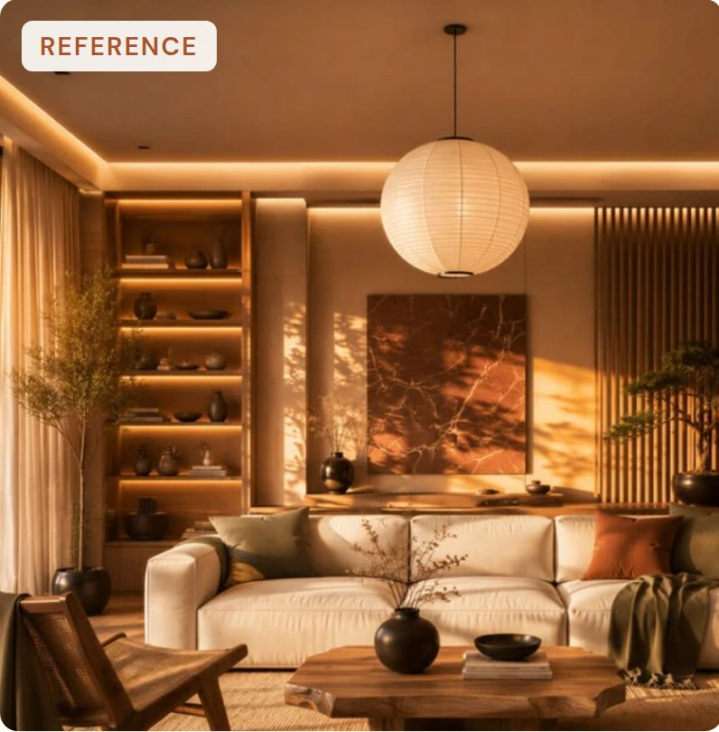
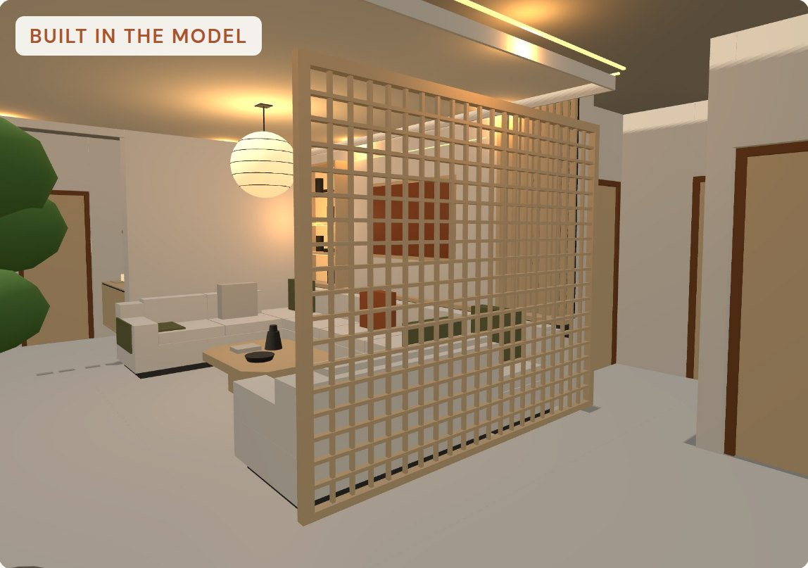
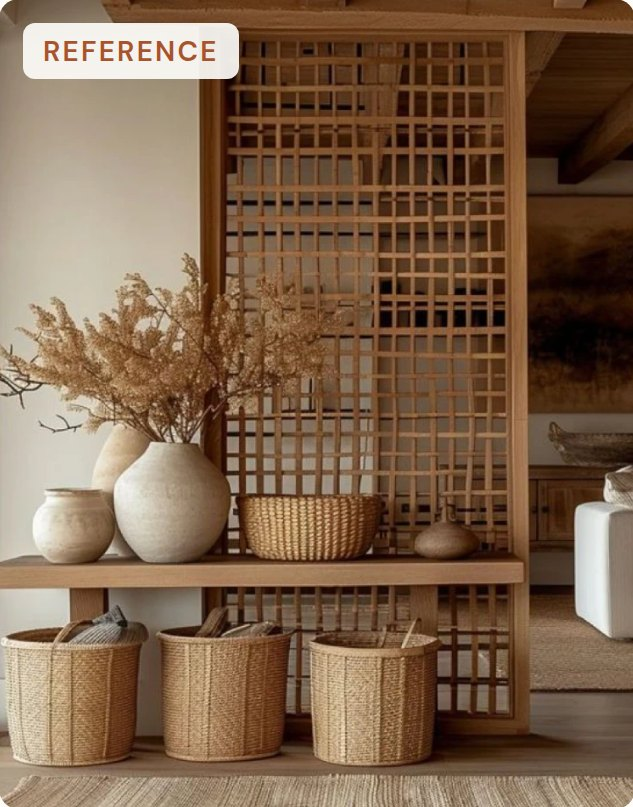
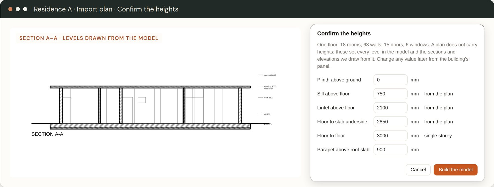

SketchUp-grade modelling for architecture, interior and landscape practices, with the AI doing the heavy lifting. Drop in your DWG and Idam builds the model, to the millimetre. You make the small edits, and it writes your working drawings back out as DWG, line for line.
A two-storey courtyard house, recorded start to finish in Idam with nothing staged: both floor plans in, the model built and checked, the working drawings out as DWG and laid over the original. Pick a step to jump to it.
The whole point is that what the client sees is what gets built. So every change to Idam is checked against a two-storey courtyard house drawn in CAD the way a studio draws: a courtyard with a lily pond, a void open through both floors, a dog-leg stair, a thinnai on columns, a balcony and a pool. Its design is known to the millimetre, so the model and the drawings Idam makes from it can be measured against it.
On a practising architect's working drawing of a real residence, the reader gets 91 of its 91 elements right. These checks are part of Idam's test suite.
Working drawings in AutoCAD: plans, sections and elevations.
Rebuilt by hand in SketchUp or Revit so the client can see it.
Exported again to a separate renderer, often on a GPU workstation.
Every design change means redrawing by hand. The drawings and the model drift apart, and mistakes on site start there. Idam keeps one model, and the drawings come from it.
Point at a wall, drop in a Pinterest image, a site photo or a product sheet, and Idam builds real elements with real dimensions: fins, jali, screens or a whole fitted wall. Every value stays editable and goes out to the drawings.


Drag across the picture to compare. Each piece is its own element, and every value can be edited.


It checked that the walkway to the dining stayed clear before placing it.
Reference images from Pinterest, shown to illustrate the workflow. Everything on the model side was built in Idam.
A plan does not carry heights, so Idam asks. It shows the levels it read, flags where the drawings disagree, and lists anything it was unsure of before it builds.

Select the verandah columns and say "make it an archway". Idam changes only what you selected, and shows you the change before anything happens.
An example of how a proposal reads in Idam's chat panel.
This is the DWG Idam wrote in the video, opened back and shown as it is: both floor plans, four elevations and a section, one CAD layer per element type, with room sizes, door swings, stair treads and an openings schedule. Drag to pan, and zoom in to check the line work.
mm, cm, m or feet and inches. PDF sheets at 1:20 to 1:500 on A4 to A0, with your studio's title block.
Raise the plinth and export again. Every sheet follows, because nothing is drawn by hand.
Quantities as CSV, IFC 4 for BIM, and OBJ, glTF, STL and USDZ for everything else.
Push/Pull, Follow Me, Offset, solid tools, sections, scenes, styles, tags, guides, Match Photo and a measurements box. They stay out of the way until you need them.
Anything that repeats is a unit and a pattern. Change the unit, the region or the bond and it tiles again, with whole and cut units counted.
Give it the site, and it researches the native plants for that place on the web. You get sizes, growth, water, sun, local names and a source for every fact, and a years slider to watch the garden grow.
One click hides every tool. Share live links that follow each edit, walk the house life-size in VR, or put a 1:50 model on the table in AR.
Plinths, sill and lintel bands, chajjas, jalis, thinnais, pooja units and tulsi maadams are elements it already knows.
Booleans run on Manifold, an open-source geometry engine, so cuts, holes and joined solids stay watertight and keep their materials.
From one-person studios to large firms. Idam starts in Tamil Nadu. It is built in Chennai by a practising architect, with Indian building conventions in its bones.
Idam is in private build, tested on real residential projects. An early-access group for architecture studios opens next.